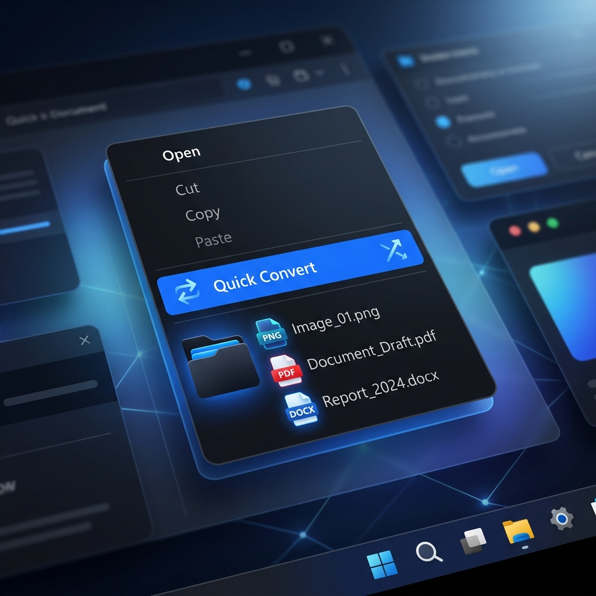

A native Windows Shell Extension that puts image, video, audio, PDF, and Office conversions directly in your right-click menu — no apps to open, no uploads.

What it converts
Smart context-aware options — only shows what makes sense for each file type.
High-fidelity conversion using Windows Imaging Component. HEIC/HEIF supported via FFmpeg.
Convert between formats, create palette-optimized GIFs, or extract audio — all via FFmpeg.
Transcode audio files between common formats using FFmpeg's built-in codecs.
Render every PDF page to high-quality images and bundle them into a ZIP, or open in Word for editing.
Export PowerPoint, Word, and Excel files to PDF via COM Automation. Requires Microsoft Office.
Redundant options are hidden automatically. Outputs are deduplicated. No configuration needed.
Setup
Get the latest ZIP from the GitHub Releases page.
e.g. C:\Program Files\QuickConvert
Registers the shell extension and context menu entries.
The Quick Convert menu appears instantly.
CLI Support
After installation, quickconvert is available as a system command.